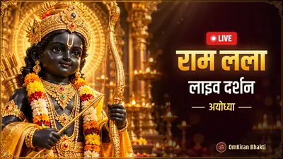

आज के लाइव दर्शन
राम मंदिर अयोध्या लाइव दर्शन का अलग पेज

स्रोत: मंदिर का आधिकारिक YouTube चैनल “Shri Ram Janmbhoomi Teerth Kshetra” — ट्रस्ट की आधिकारिक वेबसाइट srjbtkshetra.org इसी चैनल से जुड़ी है। वीडियो के सभी अधिकार उन्हीं के हैं। सभी मंदिरों के लाइव दर्शन
दर्शन और आरती का समय
| क्या | समय (लगभग) |
|---|---|
| मंगला आरती | सुबह 4:00 (पास ज़रूरी) |
| श्रृंगार आरती | सुबह 6:00 (पास ज़रूरी) |
| आम दर्शन | सुबह 7:00 से रात लगभग 9:15 तक (अंतिम प्रवेश रात 9 बजे) |
| भोग आरती | दोपहर 12:00; इस दौरान लगभग आधा घंटा दर्शन रुकते हैं |
| शयन आरती | रात (पास ज़रूरी) |
ट्रस्ट समय-समय पर समय बदलता है — जाने से पहले ट्रस्ट की वेबसाइट देख लें।
पास कैसे मिलते हैं
- सुगम दर्शन ई-पास: मुफ़्त, तय समय-स्लॉट वाला पास — online.srjbtkshetra.org पर। इससे इंतज़ार कम होता है।
- आरती पास: मुफ़्त, सीमित संख्या में, ट्रस्ट की वेबसाइट पर कुछ दिन पहले जारी होते हैं।
- तत्काल आरती पास: राम पथ पर बिड़ला धर्मशाला के सामने यात्री सुविधा केंद्र से रोज़ सुबह 9 बजे से, आधार कार्ड पर। मंगला और श्रृंगार आरती के पास एक दिन पहले, शयन आरती के उसी दिन। ट्रस्ट यह व्यवस्था समय-समय पर बदलता रहता है।
- बिना पास के भी आम कतार से दर्शन हमेशा होते हैं।
- 10 साल से बड़े हर व्यक्ति के पास वही सरकारी पहचान पत्र हो जो बुकिंग में भरा है।
- नकली वेबसाइटों से सावधान: इंटरनेट पर इस मंदिर के नाम से मिलती-जुलती कई वेबसाइटें और WhatsApp नंबर ‘VIP दर्शन’ या टिकट बेचते हैं। बुकिंग सिर्फ़ नीचे दी गई आधिकारिक वेबसाइट या ऐप से करें, किसी एजेंट को पहले से पैसे न भेजें।
जाने से पहले ज़रूरी बातें
- मोबाइल, स्मार्टवॉच, कैमरा, बैग, पेन, खाने-पीने का सामान और पानी की बोतल अंदर नहीं जाती — परकोटे के बाहर मुफ़्त सामान घर (क्लोक रूम) हैं।
- प्रवेश गेट पर मुफ़्त व्हीलचेयर मिलती है; 60 साल से ऊपर के बुज़ुर्गों, दिव्यांगों और गर्भवती महिलाओं के लिए अलग कतार है।
- परंपरा के अनुसार पहले हनुमानगढ़ी में हनुमान जी के दर्शन करके राम लला के दर्शन करें।
कैसे पहुँचें
- रेल: अयोध्या धाम जंक्शन और अयोध्या कैंट स्टेशन।
- हवाई: महर्षि वाल्मीकि अंतरराष्ट्रीय हवाई अड्डा, अयोध्या।
- सड़क: लखनऊ से लगभग 135 किमी; लखनऊ, गोरखपुर और वाराणसी से सीधी बसें।
भीड़ कब कम रहती है
रामनवमी, दिवाली (दीपोत्सव), प्राण प्रतिष्ठा की वर्षगाँठ और लंबे वीकेंड पर बहुत भीड़ होती है। हफ़्ते के बीच दोपहर 1 से 5 बजे के स्लॉट में दर्शन सबसे आसान रहते हैं।
जानकारी की जाँच: 26 अक्टूबर 2026। आधिकारिक वेबसाइट: srjbtkshetra.org। मंदिर समय, शुल्क और नियम बदलते रहते हैं — यात्रा या भुगतान से पहले आधिकारिक वेबसाइट पर ज़रूर देखें।